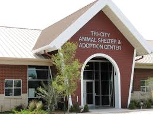
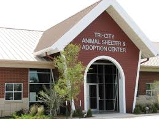

What we can do.
Statics say that more than 100 million animals including dog are being tested and die a year. It also says that 92% of all chemicals tested on animals fail on humans. They are locked up in a cell all day and don't get to run around and get to chase a ball. Unlike dogs that have a home they get lots of praise and loving and get to run and a dog in a cell they don´t get love and affection.
 
